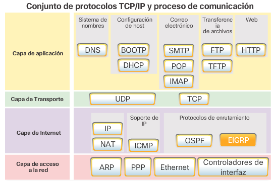
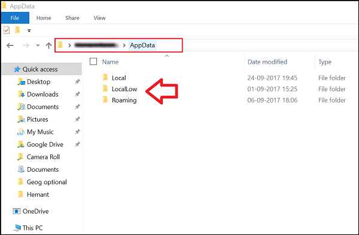
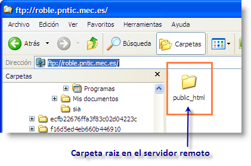

El Internet, es una red de redes que permite la interconexión descentralizada de computadoras a través de un conjunto de protocolos denominado TCP/IPUtilizando un navegador, los usuarios pueden conectarse con el servidor que brinda hosting (alojamiento) a un sitio web y acceder a sus contenidos. Para visitar una página web específica, se puede recurrir a tipear la URL en la barra de navegación. Otra posibilidad es apelar a un buscador e ingresar al enlace (o link) correspondiente.

El proveedor de servicios de internet (ISP, por las siglas de Internet Service Provider) es la empresa que brinda conexión a Internet a sus clientes. Un ISP conecta a sus usuarios a Internet a través de diferentes tecnologías como ADSL, cablemódem, GSM, dial-up, fibra óptica, satélite, streaming, etc.

| ISP de acceso telefonico |
| ISP de DSL |
| ISP de radiofrecuencia |
| ISP por satélite |
| ISP por fibra optica |
Son utilizados tanto por los dispositivos de origen como de destino durante una sesión de comunicación. Para que las comunicaciones se lleven a cabo correctamente, los protocolos de capa de aplicación que se implementaron en los hosts de origen y de destino deben ser compatibles.
La carpeta Local es usada para almacenar datos que son específicos de un sistema de Windows, lo que significa que los datos no están sincronizados entre PCs.
Es un tipo de área de trabajo especial que permite compartir el contenido de una carpeta en el sistema de archivos en todos los equipos en los que tenga una cuenta y con otros usuarios por medio de invitación.
Es el proceso afectivo interno de que resulta la interacción que un usuario tiene con un producto o servicio, el cual puede ser agradable o desagradable. Abarca todos los aspectos de la interacción del usuario final con la empresa, sus servicios y sus productos. Abarca todos los aspectos de la interacción del usuario final con la empresa, sus servicios y sus productos.
Es el medio que permite la comunicación entre un usuario y una máquina, equipo, computadora o dispositivo, y comprende todos los puntos de contacto entre el usuario y el equipo.El objetivo de esta interacción es permitir el funcionamiento y control más efectivo de la máquina desde la interacción con el humano.
| 000Webhost |
| InfinityFree |
| AwardSpace |
| Byethost |
| GoogieHost |
| HubSpot |
| Hostinger |
| GoDaddy |
| IONOS |
| Neolo |

El HTML semántico, también conocido como marcado semántico, engloba las etiquetas HTML que transmiten el significado (o semántica) de su contenido. Al añadir etiquetas HTML semánticas a tus páginas, proporcionas información adicional a los buscadores sobre la funcionalidad e importancia de las secciones de las páginas.(A diferencia del HTML no semántico, que utiliza etiquetas que no transmiten directamente su significado).